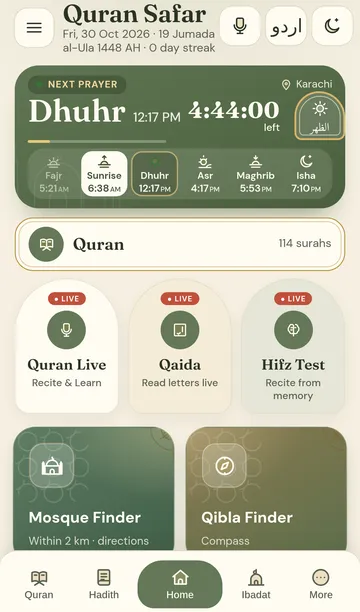
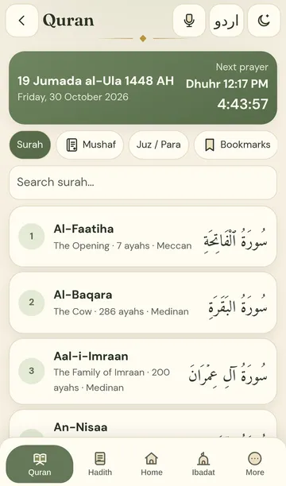
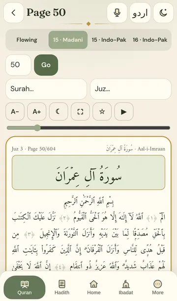
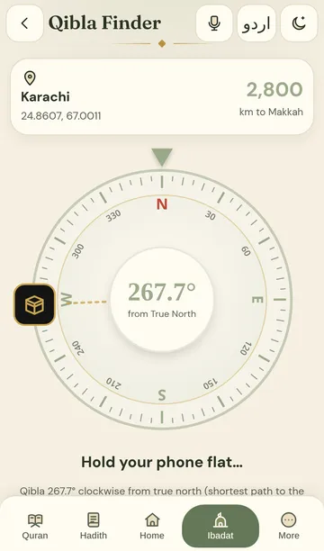
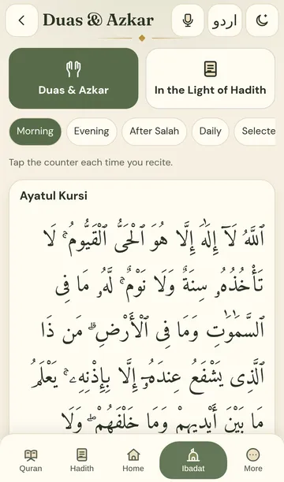
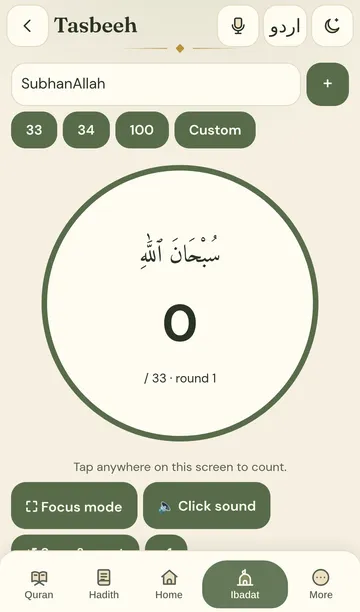

Add the app icon to your Home Screen
- Tap Share at the bottom of the screen (if you don't see it, tap first).
- Scroll down, tap Add to Home Screen
- Tap Add. Done — open Quran Safar from its icon.
Had an older version?
Press and hold the old icon, tap Remove App, then add it again.
Tap Share here
Open this page in Safari first
You opened the link inside another app. iPhone can only add the app icon from Safari.
- Tap “Copy link” above.
- Open Safari, tap the address bar, Paste and Go.
- This page will then show the 3 install steps.
Tip: some apps also have ••• → “Open in Safari” / “Open in browser”.
Install the app
- Tap at the top right of Chrome.
- Tap Install app or Add to Home screen.
- Tap Install. The icon appears on your Home screen.
Opened inside another app? Tap ⋮ and choose “Open in Chrome” first.
Scan with your phone

Open the camera on your iPhone or Android and point it at the code.
Inside the app






- Full Quran, offline
- Mushaf 15/16-line pages
- Prayer times & Azan
- Qibla Finder
- Duas & Azkar
- Tasbeeh counter
- Hadith with Urdu audio
- Recite & Learn